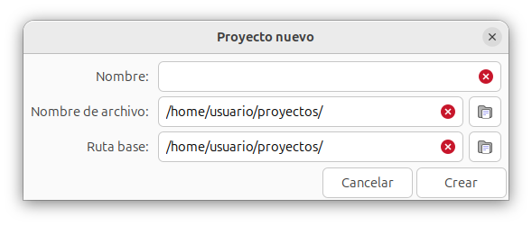
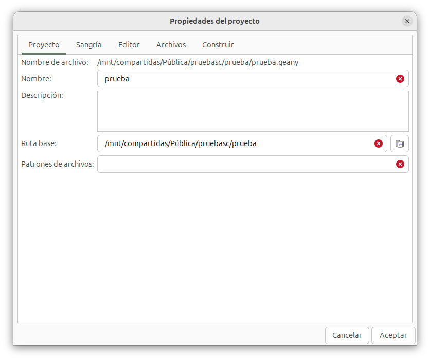

Gestión de proyectos¶
La gestión de proyectos consiste en agrupar documentos y tratarlos como un conjunto. Es una funcionalidad que podemos usar opcionalmente, ya que Geany permite trabajar a nivel de documento individual.
El uso de esta funcionalidad permite crear una configuración personalizada para los archivos que que formen parte del proyecto, de forma que:
- la configuración general de Geany se personaliza mediante el menú Editar > Preferencias
- la configuración específica para un proyecto abierto se edita con el menú Proyecto > Propiedades
- el menú Construir permite el uso de comandos específicos para el proyecto que tengamos abierto
La configuración de un proyecto se guarda en un archivo con extensión .geany, en la misma carpeta que los archivos del proyecto. El contenido de este fichero se genera automáticamente, y se guarda al cerrar el proyecto, o cuando se cierra Geany. Al reiniciar Geany, se volverá a abrir el archivo de proyecto que estaba en uso al final de la última sesión.
Nuevo proyecto¶
Hay dos formas de crear nuevos proyectos, ya sea usando el elemento de menú Proyecto > Nuevo o usando el elemento de menú Proyecto > Nuevo desde carpeta.
-
Proyecto > Nuevo
Este método es el adecuado para crear proyectos desde cero. Se creará una carpeta en el directorio base predeterminado, en principio, sin documentos.
El directorio base predeterminado se establece con el menú Editar > preferencias > General > Inicio > Rutas.
Al crear un nuevo proyecto, tenemos que cumplimentar una ventana de diálogo:

En primer lugar tenemos el nombre del proyecto. El apartado nombre de archivo establece el nombre del fichero con extensión
.geanyque guarda las propiedades del proyecto. El apartado ruta base establece la ubicación de la carpeta con los elementos del proyecto. -
Proyecto > Nuevo desde la carpeta
Este método es más adecuado cuando ya existe alguna carpeta que contiene archivos con los cuales deseamos crear un nuevo proyecto.
Al utilizar este método, Geany primero pregunta por la carpeta que contiene los archivos de texto. El campo ruta base se establecerá con esa ubicación.
Seguidamente, Geany muestra el mismo cuadro de diálogo que si usáramos el método Proyecto > Nuevo, pero ya completado con los valores basados en la selección de la ruta base.
Rutas¶
Pulsando en Editar > Preferencias > General > Inicio > Rutas, podemos establecer la ruta por defecto para proyectos.
Pulsando en Editar > Preferencias > General > Varios > Proyectos, podemos habilitar la opción almacenar el archivo del proyecto dentro del directorio base del proyecto. Sin esta opción habilitada, la ruta predeterminada del archivo .geany está un nivel por encima de la ruta base del proyecto.
En cualquier caso, podemos configurar fácilmente la ruta del archivo del proyecto final en el cuadro de diálogo Nuevo proyecto. Las preferencias proporciona solo valores predeterminados.
Propiedades de proyecto¶
El contenido del archivo de configuración de proyecto .geany se establece principalmente con el menú Proyecto > Propiedades, siempre que tengamos un proyecto abierto:

Podemos establecer una descripción opcional para el proyecto. Solo se utiliza para el comodín de plantilla {description}. Ver capítulo de Completado del texto.
El campo Ruta base se utiliza como directorio de trabajo para ejecutar los comandos del menú Construir. La ruta especificada puede ser una ruta absoluta o relativa.
El campo Patrones de archivo permite especificar una lista de tipos de archivo para el proyecto, que se puede utilizar en el cuadro de diálogo Buscar en archivos. Por ejemplo, en un proyecto de programa escrito en lenguaje C:
*.c *.h
Las pestañas Sangría, Editor y Archivos permiten personalizar la configuración del proyecto, anteponiéndose a las opciones generales del editor.
La pestaña Construir permite establecer comandos específicos para el proyecto.
Abrir proyecto¶
El comando Proyecto > Abrir muestra la ventana de selección de archivos, situándose en el directorio establecido como predeterminado para proyectos. Debemos buscar y abrir el archivo con la extensión .geany.
Geany cerrará los archivos actualmente abiertos y abrirá los archivos de sesión asociados con el proyecto.
Cerrar proyecto¶
El comando Proyecto > cerrar cierra el proyecto y sus archivos. El archivo de configuración .geany se guarda en ese momento.
Geany cerrará los archivos de la sesión del proyecto y abrirá los archivos de sesión previamente cerrados.
Organizador de proyectos¶
El complemento Projecy Organizer añade una etiqueta en el panel lateral, que permite navegar por los archivos del proyecto actualmente abierto, mostrándolos en forma de árbol de carpetas.
Incluye la indexación completa de los archivos del proyecto (y la finalización de código, el resaltado de sintaxis y los saltos de definición/declaración de símbolos para todo el proyecto), el intercambio rápido entre los archivos de encabezado y fuente, la búsqueda de archivos de proyecto por nombre y más.
Se pueden añadir directorios relacionados fuera del árbol del proyecto.
La información de cualquier proyecto se guarda en el archivo con extensión .geany, y en principio, lo que se almacena para cada proyecto es:
- directorio base del proyecto
- configuraciones de compilación
- lista de archivos abiertos
Este enfoque es adecuado para proyectos pequeños en los que la mayoría de los archivos del proyecto se almacenan en un solo directorio, pero no funciona muy bien con proyectos que constan de muchos directorios profundamente anidados, con cientos o incluso miles de archivos. Para este tipo de proyectos, un árbol expandible que muestre todos los archivos del proyecto es una mejor alternativa, ya que facilita la navegación entre los distintos directorios del proyecto. Saber qué archivos pertenecen al proyecto permite agregar otras funciones útiles, como la indexación de archivos del proyecto, el intercambio de encabezados y fuentes o la búsqueda de archivos.
Mantener una lista de archivos del proyecto es bastante complicado en proyectos grandes que constan de miles de archivos y muchos desarrolladores trabajando en ellos. Los archivos se crean, eliminan y mueven con bastante frecuencia y, después de cada cambio, el proyecto debe actualizarse manualmente. El complemento Project Organizer define una lista de archivos que pertenecen al proyecto de manera implícita utilizando:
- el directorio base del proyecto
- una lista de patrones tipo "glob" (por ejemplo,
*.c,*.ho simplemente*si desea ver todos los ficheros)
Todos los archivos del directorio base que coincidan con los patrones se incluyen en el proyecto y actualizar la lista de archivos es tan simple como presionar el botón de actualización en la barra lateral.
Existe otro complemento de Geany para la gestión de proyectos: GeanyPrj. Project Organizer y GeanyPrj difieren en varios aspectos:
-
Project Organizer es una extensión del proyecto de Geany, por lo que cada proyecto de Geany es un proyecto de Project Organizer al mismo tiempo y viceversa. Por su parte, el GeanyPrj es un gestor independiente, por lo que si se desea configurar las propiedades de compilación para un proyecto con GeanyPrj, debemos configurar un segundo proyecto de Geany en paralelo.
-
GeanyPrj puede mostrar varios proyectos en la barra lateral. Aunque solo se puede abrir un único proyecto con Project Organizer a la vez, se puede lograr un efecto similar con la función "directorios externos".
Project Organizer muestra el árbol completo en la barra lateral, mientras que GeanyPrj muestra solo un árbol de dos niveles (el nombre completo del directorio como padre y una lista de archivos debajo del directorio).
-
Project Organizer tiene patrones de archivos configurables, mientras que los patrones en GeanyPrj están codificados de forma rígida
-
Project Organizer ofrece intercambio de archivo de cabecera/archivo fuente
-
Project Organizer ofrece búsqueda de archivos de proyecto por nombre y una apertura mejorada de archivos de inclusión
Al crear el proyecto, debe definir la lista de patrones de archivos en la pestaña Proyecto->Propiedades del proyecto. Por ejemplo, para un proyecto C de código abierto típico, usar los patrones *.c, *h, *.am, *.ac para ver los archivos fuente junto con los archivos automake y autoconf. Si no se definen patrones (predeterminado), Project Organizer trata todo esto como el patrón "*", en cuyo caso se muestran todos los archivos del directorio del proyecto. Después de cerrar el cuadro de diálogo, los archivos que coinciden con los patrones deben aparecer en la barra lateral debajo de la pestaña Proyecto.
Hay configuraciones adicionales disponibles en la pestaña Project Organizer en el cuadro de diálogo Propiedades del proyecto. Podemos definir patrones para distinguir entre archivos de encabezado y fuente para lenguajes similares a C. Esta información se utiliza para el intercambio de encabezado/fuente.
Además, se puede definir patrones para archivos y directorios que deben ignorarse al buscar archivos pertenecientes al proyecto. Por lo general, estos serán varios archivos binarios y VCS u directorios ocultos.
Finalmente, podemos especificar si todos los archivos del proyecto deben indexarse o no. La configuración predeterminada es Auto, lo que significa que si el número total de archivos del proyecto (y del directorio externo) es menor a 1000, se realiza la indexación. Este es un número bastante conservador, al menos para un disco SSD: Project Organizer se probó con decenas de miles de archivos de proyecto y, aunque el escaneo inicial puede llevar algo de tiempo (para el kernel de Linux con 35000 archivos y 2300000 símbolos, lleva aproximadamente 20 segundos con un disco SSD), el trabajo con el proyecto es completamente normal después. Sin embargo, con un HDD común, esperar solo alrededor de 100 archivos escaneados por segundo debido al lento tiempo de acceso aleatorio.
La barra lateral contiene un árbol de archivos pertenecientes al proyecto y árboles de directorios externos (dibujados con fondo gris para distinguirlos de los archivos de proyecto normales). Los directorios se pueden expandir haciendo doble clic en ellos; la misma acción se utiliza para abrir archivos. Cuando se hace clic derecho en un elemento de la barra lateral, aparece un menú contextual:
-
Expandir todo: expande recursivamente todos los subdirectorios del directorio dado
-
Buscar en archivos: abre el cuadro de diálogo Buscar en archivos y establece el directorio de búsqueda en el directorio en el que se hizo clic
-
Buscar archivo: abre el cuadro de diálogo Buscar archivo y establece el directorio de búsqueda en el directorio en el que se hizo clic
-
Buscar símbolo: abre el cuadro de diálogo Buscar símbolo y establece el directorio de búsqueda en el directorio en el que se hizo clic
-
Eliminar directorio externo: elimina un directorio externo agregado previamente del proyecto
Las siguientes acciones se pueden invocar desde la barra de herramientas de la barra lateral:
-
Recargar todo: vuelve a cargar el árbol de archivos del proyecto y vuelve a indexar los archivos (si está habilitada la generación de símbolos). Esto es útil cuando se agregaron archivos, se modificaron externamente o se eliminaron del proyecto.
-
Agregar directorio externo: agrega un directorio adicional relacionado con el proyecto (por ejemplo, es útil tener el proyecto geany como un directorio externo para el proyecto geany-plugins). Los directorios externos están indexados y, básicamente, todas las funciones del Organizador de proyectos también funcionan con directorios externos (buscar archivo o buscar en archivos desde el menú contextual, intercambiar encabezado/fuente, abrir archivo seleccionado, saltos de definición/declaración de símbolos y seguir el editor activo). Además de agregar proyectos relacionados, uno de los usos posibles es agregar directorios de encabezado del sistema, por ejemplo, /usr/include/gtk-2.0, y tenerlos indexados para completar el código y resaltar la sintaxis.
-
Expandir todo: expande recursivamente todos los directorios
-
Contraer a la raíz del proyecto: contrae todos los directorios excepto la raíz del proyecto
-
Seguir el editor activo: selecciona automáticamente el archivo actual en la barra lateral cuando el usuario cambia a otro archivo. Expande automáticamente el árbol para revelar el archivo seleccionado. Activado de manera predeterminada.
Project Organizer agrega algunas entradas adicionales en el menú Proyecto:
-
Buscar en archivos de proyecto: abre el cuadro de diálogo Buscar en archivos y establece el directorio de búsqueda en el directorio base del proyecto
-
Buscar archivo de proyecto: abre el cuadro de diálogo Buscar archivo que se puede usar para buscar archivos dentro del proyecto o directorios externos
-
Buscar símbolo de proyecto: abre el cuadro de diálogo Buscar símbolo que se puede usar para buscar símbolos dentro del proyecto o directorios externos
-
Intercambiar encabezado/origen: si el archivo actual coincide con uno de los patrones de origen de las propiedades, abre un archivo de proyecto con el mismo nombre base (sin extensión) que coincida con los patrones de encabezado (y viceversa). Si los archivos ya están abiertos, simplemente cambia las pestañas del documento. No sucede nada si no se encuentra ningún archivo coincidente.
A cada una de estas entradas se le puede asignar una combinación de teclas pulsando en el menú Editar > Preferencias Combinaciones de teclas.
El cuadro de diálogo Buscar archivo se puede invocar desde el menú Proyecto o desde el menú contextual de la barra lateral. Las búsquedas se realizan de forma recursiva, comenzando desde el directorio "Buscar dentro". Todos los archivos que tienen la cadena buscada como subcadena de su nombre se muestran en la ventana Mensajes. Al hacer clic en el nombre del archivo, se abre el archivo. Las siguientes propiedades de búsqueda son configurables:
-
Distingue entre mayúsculas y minúsculas: especifica si las búsquedas deben distinguir entre mayúsculas y minúsculas
-
Buscar en la ruta completa: cuando no está marcada, la búsqueda se realiza solo en el nombre del archivo (excluyendo la ruta); cuando está marcada, la búsqueda se realiza en la ruta completa
El cuadro de diálogo Buscar símbolo se puede invocar desde el menú Proyecto o desde el menú contextual de la barra lateral. Las búsquedas se realizan dentro del directorio "Buscar dentro". Hay varios tipos de búsqueda:
- prefijo (predeterminado): busca todos los símbolos con el prefijo especificado
- exacto: busca todos los símbolos que coinciden exactamente con el nombre
- patrón: busca todos los símbolos que coinciden con el patrón global proporcionado
De manera predeterminada, se buscan definiciones de símbolos; para buscar declaraciones de símbolos, seleccione la opción Declaración.
El Organizador de proyectos agrega una entrada adicional al menú contextual del editor:
- Abrir archivo seleccionado (Organizador de proyectos). A diferencia de la entrada Abrir archivo seleccionado presente en Geany, también busca el archivo en archivos de proyecto y directorios externos.